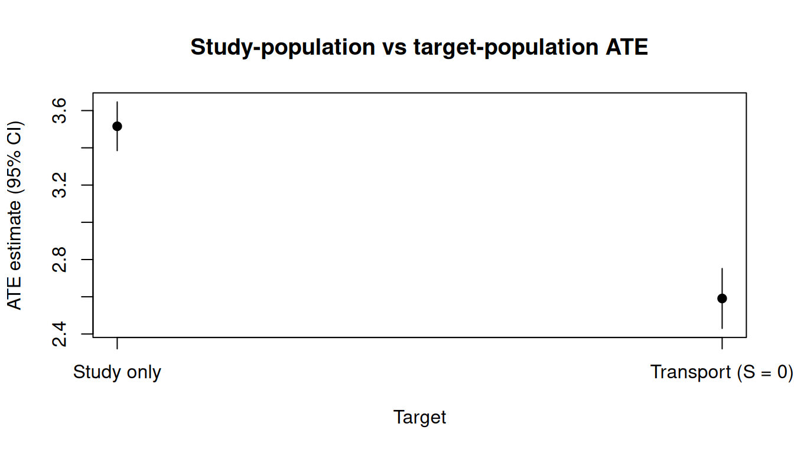
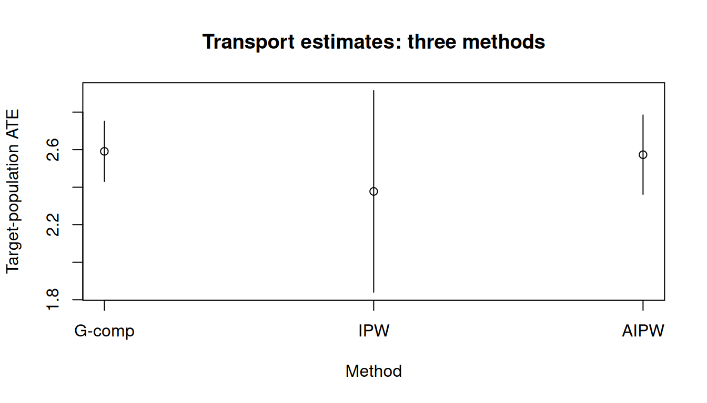

可转运性和可推广性
Transportability and generalizability · causatr 官方文档中译
来源：R 包 causatr 官方文档
transportability.qmd，MIT 许可。 本页是中译，代码与运行结果直接取自原站的渲染输出，未在本站重新执行。 Copyright (c) 2026 causatr authors；许可证全文见原仓库LICENSE.md。
causat() 估计的因果效应默认是研究样本中的效应——也就是 data 的各行。 在实际应用中，科学问题往往针对另一个人群：某家诊所、某个国家或某个队列， 它们的协变量分布与研究不同。把估计目标从研究搬到目标人群，正是可迁移性 （或可推广性）权重要做的事。
本文介绍如何用 target = 参数把因果估计值迁移到目标人群。
准备
library(causatr)模拟数据
我们模拟一个混合数据集，其中包含研究行（\(S = 1\)，数据完整）和目标行 （\(S = 0\)，只有协变量）：
set.seed(42)
n <- 3000
L <- rnorm(n)
S <- rbinom(n, 1, plogis(-0.5 + 1.0 * L))
A <- ifelse(S == 1L, rbinom(n, 1, plogis(0.2 + 0.3 * L)), NA_integer_)
Y <- ifelse(S == 1L, 2 + 3 * A + 1.5 * L + 1.0 * A * L + rnorm(n), NA_real_)
df <- data.frame(Y = Y, A = A, L = L, S = S)
head(df)
#> Y A L S
#> 1 8.600228 1 1.3709584 1
#> 2 NA NA -0.5646982 0
#> 3 NA NA 0.3631284 0
#> 4 7.208478 1 0.6328626 1
#> 5 NA NA 0.4042683 0
#> 6 NA NA -0.1061245 0
table(df$S)
#>
#> 0 1
#> 1843 1157任何人群中的真实 ATE 都是 \(3 + 1 \cdot E[L]\)（常数主效应 3 加上一个交互项 \(A \times L\)）。由于抽样模型平移了 \(L\) 的分布，研究人群（\(E[L \mid S=1] \approx 0.5\)）与目标人群（\(E[L \mid S=0] \approx -0.35\)）的 ATE 并不相同：大约分别为 3.5 和 2.65。
按选择状态分层看 \(L\) 的密度，就能看到这种协变量平移。研究人群（\(S = 1\)）中 \(L\) 的高值占比偏高，而目标人群（\(S = 0\)）则向左平移：
dens_df <- data.frame(
L = df$L,
Population = ifelse(df$S == 1L, "Study (S = 1)", "Target (S = 0)")
)
tinyplot::tinyplot(
~ L | Population,
data = dens_df,
type = "density",
lwd = 2,
xlab = "Confounder L",
ylab = "Density",
main = "Covariate shift between study and target",
palette = "dark2"
)
这种平移正是抽样模型 \(P(S = 1 \mid L)\) 所刻画的内容。没有迁移权重时，因果估计值 反映的是研究样本偏斜的 \(L\) 分布，而不是目标人群的分布。
target = 参数
把二值选择指示变量（\(S\)）的名字传给 target =：
fit_gc <- causat(
df,
outcome = "Y",
treatment = "A",
confounders_outcome = ~ L + A:L,
confounders_treatment = ~ L,
confounders_sampling = ~ L,
target = "S"
)
#> Warning: `model_fn` not specified; defaulting to `stats::glm`.
#> ℹ Set `model_fn` explicitly (e.g. `model_fn = stats::glm` or `model_fn = mgcv::gam`).
fit_gc
#> <causatr_fit>
#> Estimator: G-computation
#> Type: point
#> Outcome: Y (gaussian)
#> Treatment: A
#> Estimand: ATE
#> Conf (outcome): ~L + A:L
#> Conf (treatment): ~L
#> Conf (sampling): ~L
#> N: 3000结局模型中加入了 A:L 交互项，用来刻画异质性处理效应。没有它，G-computation 无论面对哪个目标人群，都只会估计出一个常数 ATE（\(\approx 3\)）。
这会让 causatr：
- 只在研究行（\(S = 1\)）上拟合结局模型。
- 在全部行上拟合抽样模型 \(P(S = 1 \mid L)\)。
- 在做对比时，按目标人群的协变量（而不是研究样本的协变量）标准化预测值。
用 confounders_sampling 可以为抽样模型指定一组与结局模型或处理模型不同的 协变量。
对比
res_gc <- contrast(
fit_gc,
interventions = list(a1 = static(1), a0 = static(0)),
reference = "a0"
)
res_gc| intervention | estimate | se | ci_lower | ci_upper |
|---|---|---|---|---|
| a1 | 4.169 | 0.078 | 4.015 | 4.323 |
| a0 | 1.578 | 0.063 | 1.455 | 1.701 |
| comparison | estimate | se | ci_lower | ci_upper |
|---|---|---|---|---|
| a1 vs a0 | 2.591 | 0.082 | 2.43 | 2.752 |
与只用研究样本的估计值（不给 target =）作比较：
fit_study <- causat(
df[df$S == 1, ],
outcome = "Y",
treatment = "A",
confounders = ~ L + A:L
)
#> Warning: `model_fn` not specified; defaulting to `stats::glm`.
#> ℹ Set `model_fn` explicitly (e.g. `model_fn = stats::glm` or `model_fn = mgcv::gam`).
res_study <- contrast(
fit_study,
interventions = list(a1 = static(1), a0 = static(0)),
reference = "a0"
)
res_study| intervention | estimate | se | ci_lower | ci_upper |
|---|---|---|---|---|
| a1 | 6.357 | 0.078 | 6.205 | 6.51 |
| a0 | 2.842 | 0.06 | 2.725 | 2.959 |
| comparison | estimate | se | ci_lower | ci_upper |
|---|---|---|---|---|
| a1 vs a0 | 3.516 | 0.067 | 3.385 | 3.647 |
两个估计值不同，是因为目标人群的 \(L\) 分布与研究样本不同：
study_transport_df <- data.frame(
Target = c("Study only", "Transport (S = 0)"),
Estimate = c(res_study$contrasts$estimate[1],
res_gc$contrasts$estimate[1]),
CI_lower = c(res_study$contrasts$ci_lower[1],
res_gc$contrasts$ci_lower[1]),
CI_upper = c(res_study$contrasts$ci_upper[1],
res_gc$contrasts$ci_upper[1])
)
tinyplot::tinyplot(
Estimate ~ Target,
data = study_transport_df,
type = "pointrange",
ymin = study_transport_df$CI_lower,
ymax = study_transport_df$CI_upper,
pch = 19,
ylab = "ATE estimate (95% CI)",
main = "Study-population vs target-population ATE"
)
可迁移性与可推广性
target_subset 参数控制由哪些行定义目标人群：
target_subset = "target"（默认）：目标人群仅为 \(S = 0\)。这就是可迁移性——研究处在目标人群之外。target_subset = "all"：目标人群是 \(S = 0 \cup S = 1\)（合并后的完整样本）。这就是可推广性——研究是目标人群的一个有偏子样本。
fit_gen <- causat(
df,
outcome = "Y",
treatment = "A",
confounders_outcome = ~ L + A:L,
confounders_treatment = ~ L,
confounders_sampling = ~ L,
target = "S",
target_subset = "all"
)
#> Warning: `model_fn` not specified; defaulting to `stats::glm`.
#> ℹ Set `model_fn` explicitly (e.g. `model_fn = stats::glm` or `model_fn = mgcv::gam`).
res_gen <- contrast(
fit_gen,
interventions = list(a1 = static(1), a0 = static(0)),
reference = "a0"
)
res_gen| intervention | estimate | se | ci_lower | ci_upper |
|---|---|---|---|---|
| a1 | 5.013 | 0.067 | 4.882 | 5.144 |
| a0 | 2.065 | 0.053 | 1.961 | 2.17 |
| comparison | estimate | se | ci_lower | ci_upper |
|---|---|---|---|---|
| a1 vs a0 | 2.948 | 0.069 | 2.812 | 3.083 |
三种估计量
三种点处理估计量都支持 target =：
IPW 迁移
在 IPW 下，处理的密度比权重要乘以抽样权重 \(w^S_i = [1 - \hat P(S = 1 \mid L_i)] / \hat P(S = 1 \mid L_i)\)：
fit_ipw <- causat(
df,
outcome = "Y",
treatment = "A",
confounders = ~ L,
estimator = "ipw",
target = "S"
)
#> Warning: `model_fn` not specified; defaulting to `stats::glm`.
#> ℹ Set `model_fn` explicitly (e.g. `model_fn = stats::glm` or `model_fn = mgcv::gam`).
#> Warning: `propensity_model_fn` not specified; defaulting to `stats::glm`.
#> ℹ Set `propensity_model_fn` explicitly if you need a different fitter (e.g. `mgcv::gam`).
res_ipw <- contrast(
fit_ipw,
interventions = list(a1 = static(1), a0 = static(0)),
reference = "a0"
)
res_ipw| intervention | estimate | se | ci_lower | ci_upper |
|---|---|---|---|---|
| a1 | 3.989 | 0.252 | 3.496 | 4.482 |
| a0 | 1.611 | 0.122 | 1.373 | 1.85 |
| comparison | estimate | se | ci_lower | ci_upper |
|---|---|---|---|---|
| a1 vs a0 | 2.377 | 0.274 | 1.84 | 2.914 |
AIPW 迁移（双稳健）
AIPW 把结局模型和处理权重与抽样权重结合起来，只要结局模型与处理模型中有一个设定正确，估计就具有一致性：
fit_aipw <- causat(
df,
outcome = "Y",
treatment = "A",
confounders_outcome = ~ L + A:L,
confounders_treatment = ~ L,
confounders_sampling = ~ L,
estimator = "aipw",
target = "S"
)
#> Warning: `model_fn` not specified; defaulting to `stats::glm`.
#> ℹ Set `model_fn` explicitly (e.g. `model_fn = stats::glm` or `model_fn = mgcv::gam`).
#> Warning: `propensity_model_fn` not specified; defaulting to `stats::glm`.
#> ℹ Set `propensity_model_fn` explicitly if you need a different fitter (e.g. `mgcv::gam`).
res_aipw <- contrast(
fit_aipw,
interventions = list(a1 = static(1), a0 = static(0)),
reference = "a0"
)
res_aipw| intervention | estimate | se | ci_lower | ci_upper |
|---|---|---|---|---|
| a1 | 4.127 | 0.115 | 3.902 | 4.352 |
| a0 | 1.554 | 0.069 | 1.418 | 1.689 |
| comparison | estimate | se | ci_lower | ci_upper |
|---|---|---|---|---|
| a1 vs a0 | 2.573 | 0.108 | 2.362 | 2.784 |
比较
methods_df <- data.frame(
Method = c("G-comp", "IPW", "AIPW"),
Estimate = c(
res_gc$contrasts$estimate[1],
res_ipw$contrasts$estimate[1],
res_aipw$contrasts$estimate[1]
),
CI_lower = c(
res_gc$contrasts$ci_lower[1],
res_ipw$contrasts$ci_lower[1],
res_aipw$contrasts$ci_lower[1]
),
CI_upper = c(
res_gc$contrasts$ci_upper[1],
res_ipw$contrasts$ci_upper[1],
res_aipw$contrasts$ci_upper[1]
)
)
tinyplot::tinyplot(
Estimate ~ Method,
data = methods_df,
type = "pointrange",
ymin = methods_df$CI_lower,
ymax = methods_df$CI_upper,
ylab = "Target-population ATE",
main = "Transport estimates: three methods"
)
删失结局（IPCW × 迁移）
当结局存在右删失时，censoring = 会加上删失逆概率权重（IPCW）。这些权重与可迁移性权重可以无缝组合——三个权重分量（处理、删失、抽样）逐点相乘：
set.seed(99)
n2 <- 4000
L2 <- rnorm(n2)
S2 <- rbinom(n2, 1, plogis(-0.5 + 1.0 * L2))
A2 <- ifelse(S2 == 1L, rbinom(n2, 1, plogis(0.2 + 0.3 * L2)), NA_integer_)
C2 <- ifelse(S2 == 1L, rbinom(n2, 1, plogis(-1.5 + 0.5 * A2 + 0.3 * L2)), 0L)
#> Warning in rbinom(n2, 1, plogis(-1.5 + 0.5 * A2 + 0.3 * L2)): NAs produced
Y2_full <- ifelse(S2 == 1L, 2 + 3 * A2 + 1.5 * L2 + rnorm(n2), NA_real_)
Y2 <- ifelse(C2 == 1L, NA_real_, Y2_full)
df2 <- data.frame(Y = Y2, A = A2, L = L2, S = S2, C = C2)三种估计量都支持 IPCW + 迁移：
fit_ipcw_gc <- causat(
df2,
outcome = "Y",
treatment = "A",
confounders = ~ L,
target = "S",
censoring = "C"
)
#> Warning: `model_fn` not specified; defaulting to `stats::glm`.
#> ℹ Set `model_fn` explicitly (e.g. `model_fn = stats::glm` or `model_fn = mgcv::gam`).
res_ipcw_gc <- contrast(
fit_ipcw_gc,
interventions = list(a1 = static(1), a0 = static(0)),
reference = "a0"
)
res_ipcw_gc| intervention | estimate | se | ci_lower | ci_upper |
|---|---|---|---|---|
| a1 | 4.583 | 0.057 | 4.472 | 4.694 |
| a0 | 1.529 | 0.055 | 1.421 | 1.636 |
| comparison | estimate | se | ci_lower | ci_upper |
|---|---|---|---|---|
| a1 vs a0 | 3.055 | 0.061 | 2.936 | 3.174 |
三明治方差通过影响函数修正链，把结局、删失、抽样这三个冗余模型全部纳入考虑。
修正处理策略（MTP）+ 迁移
对于静态干预，目标行的预测直接使用 \(\hat{m}(a, L_i)\)。但 MTP 干预 — shift()、 scale_by()、threshold()、dynamic() — 会通过 \(d(A, L)\) 变换观测到的处理， 而目标行（S = 0）的 \(A = \text{NA}\)。causatr 用 MC 边缘化解决这个问题：它把 \(E_{A \mid L, S=1}[\hat{m}(d(A,L), L)]\) 在研究人群的处理分布上积分。二值处理下 这是精确枚举；连续处理下则从拟合好的处理模型中抽取 Monte Carlo 样本。
set.seed(201)
n3 <- 6000
L3 <- rnorm(n3)
S3 <- rbinom(n3, 1, plogis(-0.5 + L3))
A3 <- ifelse(S3 == 1L, rnorm(n3, 0.5 + 0.3 * L3, 1), NA_real_)
Y3 <- ifelse(
S3 == 1L,
2 + 3 * A3 + 1.5 * L3 + A3 * L3 + rnorm(n3),
NA_real_
)
df3 <- data.frame(Y = Y3, A = A3, L = L3, S = S3)
fit_mtp <- causat(df3, "Y", "A", ~ L + A:L, target = "S")
#> Warning: `model_fn` not specified; defaulting to `stats::glm`.
#> ℹ Set `model_fn` explicitly (e.g. `model_fn = stats::glm` or `model_fn = mgcv::gam`).
res_mtp <- contrast(
fit_mtp,
interventions = list(shifted = shift(1), natural = NULL),
reference = "natural",
type = "difference",
ci_method = "bootstrap",
n_boot = 200
)
res_mtp| intervention | estimate | se | ci_lower | ci_upper |
|---|---|---|---|---|
| shifted | 5.34 | 0.098 | 5.141 | 5.526 |
| natural | 2.693 | 0.089 | 2.518 | 2.86 |
| comparison | estimate | se | ci_lower | ci_upper |
|---|---|---|---|---|
| shifted vs natural | 2.647 | 0.034 | 2.59 | 2.721 |
该 DGP 的解析真值为 \(3 \delta + \delta \cdot E[L \mid S = 0]\)；bootstrap CI 应当把它包含在内。
重要：MTP + 迁移下，G-computation 和 AIPW 都不提供三明治方差，因为 MC 边缘化引入了当前 IF 链未能刻画的处理模型依赖。请改用 ci_method = "bootstrap"。IPW + MTP + 迁移支持三明治（不需要 MC 边缘化）。
纵向迁移
可迁移性可以与纵向 IPW（id =、time =）组合使用。抽样模型在首期各行上拟合， 得到的抽样优势权重会被广播到每个个体的所有个体-时期行上。在纵向 Hájek MSM 内部，该抽样权重与逐期的处理密度比权重相乘。
set.seed(314)
n_long <- 1500
L0 <- rnorm(n_long)
S <- rbinom(n_long, 1, plogis(-0.3 + 0.8 * L0))
A0 <- ifelse(S == 1L, rbinom(n_long, 1, plogis(0.3 * L0)), NA_integer_)
L1 <- ifelse(S == 1L, 0.5 * L0 + 0.4 * A0 + rnorm(n_long, sd = 0.5), NA_real_)
A1 <- ifelse(S == 1L, rbinom(n_long, 1, plogis(0.3 * L1)), NA_integer_)
#> Warning in rbinom(n_long, 1, plogis(0.3 * L1)): NAs produced
Y <- ifelse(
S == 1L,
2 * A0 + 2 * A1 + L0 + 0.5 * L1 + rnorm(n_long),
NA_real_
)
# Build person-period data
wide <- data.frame(id = seq_len(n_long), L0 = L0, S = S,
A0 = A0, L_1 = L0, A1 = A1, L_2 = L1, Y = Y)
long <- to_person_period(
wide,
id = "id",
time_varying = list(L = c("L_1", "L_2"), A = c("A0", "A1")),
time_invariant = c("L0", "S", "Y")
)fit_long <- causat(
long,
outcome = "Y",
treatment = "A",
confounders = ~ L0,
confounders_tv = ~ L,
id = "id",
time = "time",
estimator = "ipw",
target = "S"
)
res_long <- contrast(
fit_long,
interventions = list(always = static(1), never = static(0)),
reference = "never"
)
res_long| intervention | estimate | se | ci_lower | ci_upper |
|---|---|---|---|---|
| always | 3.975 | 0.12 | 3.739 | 4.211 |
| never | -0.737 | 0.148 | -1.027 | -0.448 |
| comparison | estimate | se | ci_lower | ci_upper |
|---|---|---|---|---|
| always vs never | 4.712 | 0.184 | 4.352 | 5.073 |
ICE G-computation 同样支持纵向迁移 — 结局模型在研究行上拟合，反事实预测则在 目标人群的基线协变量上取平均。
多元处理 × 迁移
联合处理 IPW（treatment = c("A1", "A2")）可以与迁移组合。序贯 MTP 分解得到的 逐分量密度比权重会与抽样优势权重相乘：
set.seed(808)
n_mv <- 2000
L_mv <- rnorm(n_mv)
S_mv <- rbinom(n_mv, 1, plogis(-0.5 + 0.8 * L_mv))
A1_mv <- ifelse(
S_mv == 1L, rbinom(n_mv, 1, plogis(0.2 + 0.3 * L_mv)), NA_integer_
)
A2_mv <- ifelse(
S_mv == 1L,
rbinom(n_mv, 1, plogis(0.1 + 0.2 * L_mv + 0.3 * A1_mv)),
NA_integer_
)
#> Warning in rbinom(n_mv, 1, plogis(0.1 + 0.2 * L_mv + 0.3 * A1_mv)): NAs
#> produced
Y_mv <- ifelse(
S_mv == 1L,
1 + 2 * A1_mv + 1.5 * A2_mv + L_mv + 0.5 * A1_mv * L_mv + rnorm(n_mv),
NA_real_
)
df_mv <- data.frame(Y = Y_mv, A1 = A1_mv, A2 = A2_mv, L = L_mv, S = S_mv)fit_mv <- causat(
df_mv,
outcome = "Y",
treatment = c("A1", "A2"),
confounders = ~ L,
estimator = "ipw",
target = "S"
)
#> Warning: `model_fn` not specified; defaulting to `stats::glm`.
#> ℹ Set `model_fn` explicitly (e.g. `model_fn = stats::glm` or `model_fn = mgcv::gam`).
#> Warning: `propensity_model_fn` not specified; defaulting to `stats::glm`.
#> ℹ Set `propensity_model_fn` explicitly if you need a different fitter (e.g. `mgcv::gam`).
res_mv <- contrast(
fit_mv,
interventions = list(
both = list(A1 = static(1), A2 = static(1)),
neither = list(A1 = static(0), A2 = static(0))
),
reference = "neither"
)
res_mv| intervention | estimate | se | ci_lower | ci_upper |
|---|---|---|---|---|
| both | 4.193 | 0.176 | 3.848 | 4.538 |
| neither | 0.736 | 0.112 | 0.517 | 0.954 |
| comparison | estimate | se | ci_lower | ci_upper |
|---|---|---|---|---|
| both vs neither | 3.458 | 0.196 | 3.073 | 3.842 |
三明治方差和 bootstrap 方差对多元 IPW 迁移都适用。稳定化权重 （stabilize = "marginal"）同样可以与迁移组合。
分别指定混杂因子
用 confounders_sampling 控制哪些协变量进入抽样模型 \(P(S = 1 \mid L)\)，这与结局模型或处理模型所用的协变量相互独立：
fit_sep <- causat(
df,
outcome = "Y",
treatment = "A",
confounders_outcome = ~ L + A:L + I(L^2),
confounders_treatment = ~ L,
confounders_sampling = ~ L,
estimator = "aipw",
target = "S"
)
#> Warning: `model_fn` not specified; defaulting to `stats::glm`.
#> ℹ Set `model_fn` explicitly (e.g. `model_fn = stats::glm` or `model_fn = mgcv::gam`).
#> Warning: `propensity_model_fn` not specified; defaulting to `stats::glm`.
#> ℹ Set `propensity_model_fn` explicitly if you need a different fitter (e.g. `mgcv::gam`).
res_sep <- contrast(
fit_sep,
interventions = list(a1 = static(1), a0 = static(0)),
reference = "a0"
)
res_sep| intervention | estimate | se | ci_lower | ci_upper |
|---|---|---|---|---|
| a1 | 4.131 | 0.112 | 3.911 | 4.351 |
| a0 | 1.552 | 0.069 | 1.417 | 1.686 |
| comparison | estimate | se | ci_lower | ci_upper |
|---|---|---|---|---|
| a1 vs a0 | 2.579 | 0.104 | 2.375 | 2.783 |
当结局模型需要灵活的设定（样条、多项式）而抽样模型只需要 一组核心的基线混杂因子时，这种做法尤其有用。
诊断
对于迁移拟合，diagnose() 会包含一个抽样模型面板， 报告抽样评分的分布、抽样权重摘要以及极端权重标记：
diag <- diagnose(fit_ipw)
#> Note: `s.d.denom` not specified; assuming "pooled".
diag
#> <causatr_diag>
#> Estimator:ipw
#> Treatment: binary
#> Estimand: ATE
#>
#> Positivity:
#> statistic value
#> <char> <num>
#> min 0.3283844
#> q25 0.5232723
#> median 0.5772245
#> q75 0.6320640
#> max 0.8095657
#> n_below_lower 0.0000000
#> n_above_upper 0.0000000
#> n_violations 0.0000000
#> pct_violations 0.0000000
#>
#> Covariate balance:
#> Balance Measures
#> Type Diff.Un M.Threshold.Un V.Ratio.Un
#> L Contin. 0.3319 Not Balanced, >0.1 1.1408
#>
#> Balance tally for mean differences
#> count
#> Balanced, <0.1 0
#> Not Balanced, >0.1 1
#>
#> Variable with the greatest mean difference
#> Variable Diff.Un M.Threshold.Un
#> L 0.3319 Not Balanced, >0.1
#>
#> Sample sizes
#> Control Treated
#> All 492 665
#>
#> Weight distribution:
#> group n mean sd min max ess
#> <char> <int> <num> <num> <num> <num> <num>
#> treated 665 1.742163 0.2607069 1.235230 2.994992 650.4557
#> control 492 2.346339 0.4437681 1.488947 5.075262 475.0418
#> overall 1157 1.999081 0.4604115 1.235230 5.075262 1098.7680
#>
#> Sampling model:
#> statistic value
#> <char> <num>
#> n_study 1157.0000
#> n_target 1843.0000
#> pct_study 38.5700
#> target_subset NA
#> p_study_min 0.0159
#> p_study_q05 0.0875
#> p_study_median 0.3619
#> p_study_q95 0.7599
#> p_study_max 0.9619
#> p_study_mean_s1 0.4980
#> p_study_mean_s0 0.3152
#> sw_mean 1.5937
#> sw_sd 1.9389
#> sw_min 0.0396
#> sw_max 18.6510
#> sw_ess 466.7700
#> sw_n_extreme 0.0000需要检查的关键诊断：
- 抽样正值性：\(P(S = 1 \mid L)\) 不应太接近 0 或 1。
p_study_min和p_study_max这两个分位数会标记重叠性违背。 - 极端权重：抽样权重过大，说明在 \(L\) 的某些区域研究样本对目标人群 的代表性不足，会带来不稳定。
- ESS：抽样重加权之后的有效样本量。ESS 偏低说明估计值由少数几个 观测主导。
识别假定
迁移估计值需要四条假定 (Dahabreh 等 2020)：
- 研究内部的条件可交换性： \(Y^a \perp A \mid L, S = 1\)。
- 研究内部的处理正值性： \(0 < P(A = a \mid L, S = 1) < 1\)。
- 跨人群的可交换性（可迁移性）： \(E[Y^a \mid L, S = 1] = E[Y^a \mid L, S = 0]\) — 给定 \(L\) 时， 条件潜在结局均值在两个人群中相同。
- 抽样正值性： 在目标人群的支撑集上 \(P(S = 1 \mid L) > 0\)。
假定 1–2 是标准的因果假定（用 diagnose() 的均衡面板和正值性面板检查）。 假定 3 是可迁移性的跨越 — 它无法直接检验，只能依靠领域知识。 假定 4 由抽样诊断来检查。
不支持匹配
匹配 + 可迁移性会被直接拒绝：
causat(
df,
outcome = "Y",
treatment = "A",
confounders = ~ L,
estimator = "matching",
target = "S"
)
#> Error in `causat()`:
#> ! `target` is not supported with `estimator = "matching"`.
#> ℹ Transportability does not compose cleanly with matching. Use `estimator = "gcomp"` or `"ipw"` instead.这是有意为之：MatchIt 的匹配权重路径无法与外部抽样权重干净地组合。
已覆盖组合汇总
comb <- data.frame(
Estimator = c(
"gcomp", "gcomp", "gcomp", "gcomp",
"IPW", "IPW", "IPW", "IPW",
"AIPW", "AIPW", "AIPW",
"matching"
),
Treatment = c(
"binary", "continuous (MTP)", "multivariate", "longitudinal (ICE)",
"binary", "continuous (MTP)", "multivariate", "longitudinal",
"binary", "continuous (MTP)", "multivariate",
"any"
),
Transport = c(
"Yes", "Yes (MC)", "Yes", "Yes",
"Yes", "Yes", "Yes", "Yes",
"Yes", "Yes (MC)", "Yes",
"No"
),
Sandwich = c(
"Yes", "No (bootstrap)", "Yes", "Yes",
"Yes", "Yes", "Yes", "Yes",
"Yes", "No (bootstrap)", "Yes",
"---"
),
IPCW = c(
"Yes", "---", "---", "---",
"Yes", "---", "---", "Yes",
"Yes", "---", "---",
"---"
),
Status = c(
"Yes", "Yes", "Yes", "Yes",
"Yes", "Yes", "Yes", "Yes",
"Yes", "Yes", "Yes",
"Rejected"
)
)
tinytable::tt(comb) |>
tinytable::style_tt(j = 1:6, align = "lllccc")完整的测试级覆盖明细见 FEATURE_COVERAGE_MATRIX.md。